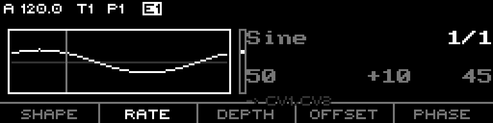
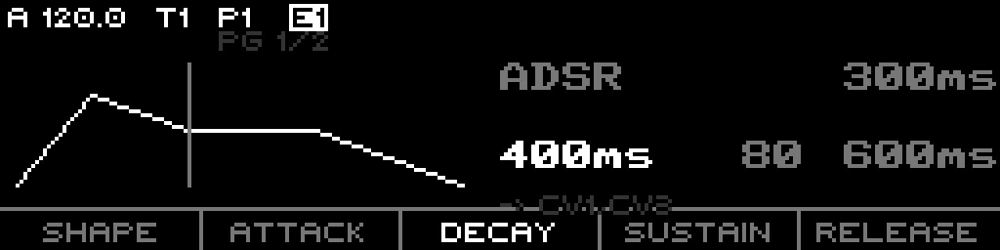
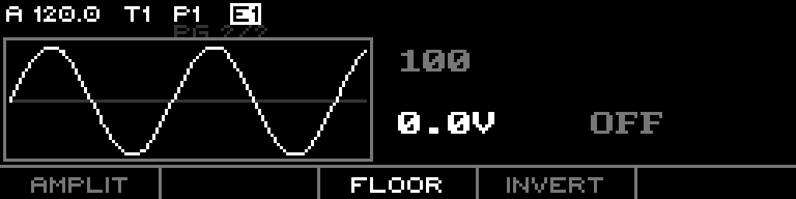
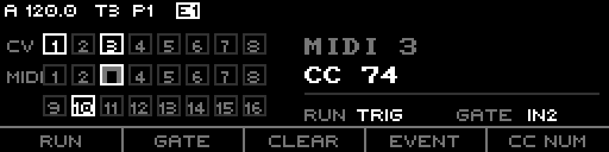
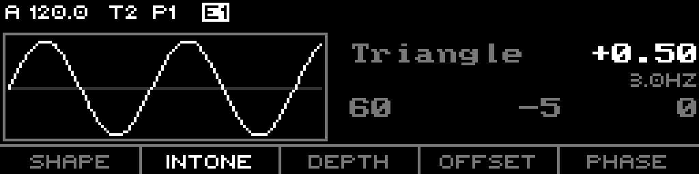
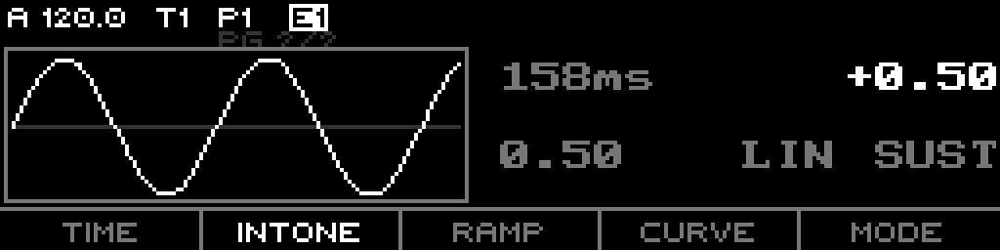
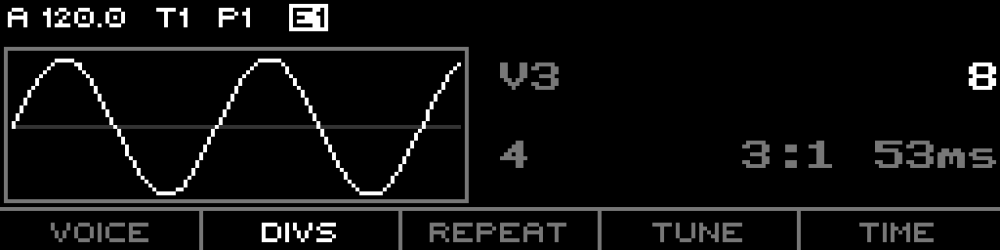

The complete modulator manual, exactly as the firmware works today — from a plain LFO all the way to Geode, the Just Friends rhythmic engine. Written for someone who knows XFORMER's tracks but has never opened the modulator page.
XFORMER has 8 modulators (M1–M8), separate from your sequencer tracks. Each is a small signal generator — an LFO, a random source, an envelope, a chaos attractor — whose output you route to CV jacks and/or MIDI to move things around. They run continuously, even when the transport is stopped (Free-rate modulators keep going on wall-clock time).
Open the modulator page, pick a modulator with the track-select keys (1–8 select M1–M8), and you get a live scope of its output on the left and its parameters on the right.
| Control | Does |
|---|---|
| Track-select 1–8 | Select modulator M1–M8. |
| F1–F5 | Select the parameter under that footer label. |
| Encoder turn | Edit the selected parameter. Push + turn = fine step. |
| ← / → | Walk the page cursor: parameter page(s) → the destinations (routing) page. |
| Re-press RATE | Toggle the rate domain FREE ↔ TEMPO (LFO/Chaos shapes). |
| Re-press SHAPE | Audition — fires a one-shot gate pulse into the current modulator (see below). |
| Shift+RATE | Toggle JustF (rate-link mode). §9. |
| Shift+SHAPE | Toggle Geode (rhythmic engine). §10. |
ADSR and Chaos shapes have two parameter pages (a Pg 1/2 marker shows top-left);
→ moves between them, then on to the destinations page.
Internally a modulator outputs a number 0–127. At a CV jack that maps bipolar around centre:
| Value | 0 | 64 | 127 |
|---|---|---|---|
| Volts | −5 V | 0 V (centre) | +5 V |
So 64 is the resting centre / 0 V. A bipolar LFO swings around 64; a unipolar envelope rests at its floor (64 by default = 0 V) and rises toward 127. The same value also feeds MIDI and the CV-route Mod sources, so what you see in the scope is what every destination gets.
F1 (SHAPE) cycles the shape. Each family shows a different set of parameters:
| Shape | Page 1 parameters | Page 2 |
|---|---|---|
| Sine / Triangle / Saw Up / Saw Down / Square LFO | SHAPE · RATE · DEPTH · OFFSET · PHASE | — |
| Random noise | SHAPE · R.MODE · DEPTH|G.SRC · OFFSET · SLEW | — |
| ADSR envelope | SHAPE · ATTACK · DECAY · SUSTAIN · RELEASE |
AMPLIT · FLOOR · INVERT |
| Lorenz / Latoocarfian chaos | SHAPE · RATE · P1 · P2 · DEPTH | SLEW · OFFSET |

LFO — rate, depth, offset, phase.

ADSR — attack/decay/sustain/release.
| Param | Range | Meaning |
|---|---|---|
| RATE | 0.01–16 Hz (Free) · clock division (Tempo) | Speed of the LFO/chaos. §5. |
| DEPTH | 0–127 | How far the output swings from centre. |
| OFFSET | −64…+63 | Bias / rest level. This is the FLOOR (§7); 0 = 0 V. |
| PHASE | 0–360° | Starting phase; also the reset point in TRIG mode. |
| SLEW | 0–5000 ms | Smoothing (Random / chaos page 2). |
| R.MODE | Clocked · Triggered | Random: free stepping vs gate-triggered S&H. |
| ATTACK / DECAY / RELEASE | 0–2000 ms | ADSR envelope stage times. |
| SUSTAIN | 0–127 | ADSR held level. |
| AMPLIT | 0–127 | ADSR peak height (page 2). |
| P1 / P2 | 0–100 | Chaos attractor coefficients (Lorenz rho/beta, etc.). |
Clocked steps to a new smoothed value on its own
rate; Triggered is a sample-&-hold that grabs a new value on each gate (the third cell becomes
G.SRC, the gate source). Chaos (Lorenz / Latoocarfian) are strange attractors — RATE
sets how fast you travel the attractor, P1/P2 reshape it.RATE has two domains; re-press the RATE key to flip between them:
2.00Hz.A modulator can react to a gate. The gate mode (footer RUN on the destinations page) sets how:
| Mode | Behaviour |
|---|---|
| FREE | Free-running; the gate is ignored. |
| TRIG | Reset the phase to its offset on every gate rising edge (hard sync). |
| HOLD | Advance only while the gate is high; reset on rising. |
The gate source (footer GATE) can be any of:
GateOut1–8CvIn1–4 (crosses at ~1 V)BusCv1–4Mod1–8 (a modulator can't gate from itself)Continuous sources are thresholded at their midpoint with a little hysteresis, so an LFO or CV can act as a gate.
The output passes through a per-modulator floor + invert just before it becomes voltage, so every destination stays consistent.
OFFSET value, read as the rest voltage. Default 0 V; an envelope
rests here and rises. On ADSR it's a cell on page 2 (shown in volts).
ADSR page 2 — AMPLITUDE, plus FLOOR (rest voltage) and INVERT.
Press → past the last parameter page to reach destinations. A modulator can
drive many outputs at once — a membership grid of CV jacks (1–8) and MIDI outs (1–16);
filled = assigned. The encoder moves the cursor, push adds, CLEAR (F3) removes the cursored one.

Destinations — CV/MIDI membership grid + the cursored output's EVENT/CC, and RUN/GATE for the modulator.
Per MIDI out, the EVENT (F4) chooses what the modulator sends — CC (with a CC NUM),
Bend (pitch bend), or Aftertouch (channel pressure). Footer keys also carry the
gate RUN mode and GATE source from §6. Changes commit through the context menu
(CANCEL / COMMIT on F4/F5).
A transient mode (toggle Shift+RATE) borrowed from Instruo ochd / Just Friends: it links all eight modulators to M1 through a single INTONE spread. M1 is the master; M2–M8 fan out to harmonic (CW) or subharmonic (CCW) multiples.

JustF — M2's RATE cell becomes INTONE; M3–M8 show their derived rate.
Geode turns the whole bank into a 6-voice Just Friends: each voice fires bursts of envelopes on a gate, and the six are tuned together by INTONE. Toggle with Shift+SHAPE (mutually exclusive with JustF). Unlike JustF, Geode is a real saved mode — it persists with the project.
One gate fires a burst, defined per voice by two numbers:
0 = one hit, 4 = five,
−1 (INF) = forever.
M1 page 2 — the five Geode globals (M1 page 1 stays the clock RATE + a normal modulator).
| Global | Does |
|---|---|
| TIME | Base envelope length, ~166 ms–4 s — how long one hit lasts. (Distinct from M1's RATE, which is the tempo.) |
| INTONE | Tunes the six voices' envelope speeds into a harmonic series. Up = snappier down the bank, down = longer. |
| RAMP | Attack/decay balance. 0 = pluck, 0.5 = triangle, 1 = reverse. |
| CURVE | Envelope shape: STEP / LOG / LIN / EXP. |
| MODE | How a burst's amplitudes evolve: TRANS / SUST / CYCLE — see below. |
RUN comes from M2's output (bipolar; 0 at centre = neutral). It reshapes how a burst's amplitudes evolve, and what it does depends on MODE:
| MODE | Burst behaves like… | RUN (from M2) controls… |
|---|---|---|
| TRANS accent | Every repeat full velocity — steady stream. | Accent cycles (emphasise every n-th hit). |
| SUST gravity | Repeats decay to silence — bouncing-ball / tom roll. | Decay rate: + accelerates, − slows. |
| CYCLE tremolo | Continuous amplitude cycling — tremolo. | Cycle rate; negative adds pseudo-random feel. |

A voice (M3–M8) — live scope + DIVS/REPEAT. Gate & output live on its destinations page.
GEODE.MODE TRANS · TIME ~150ms · RAMP 0.1 · INTONE noon · DIVS 4/3/6/8/2/5 · REPEATS 0 — program rhythms on tracks 3–8.
Six lanes, each on its own DIVS — full-height plucks (TRANS), one per gate.
MODE SUST · TIME ~250ms · REPEATS 8 · DIVS 8 · M2 (RUN) positive — RUN+ accelerates the decay.
One gate, REPEATS 8 = nine evenly-spaced hits that decay to silence.
MODE CYCLE · REPEATS INF · DIVS 1 · RAMP 0.5 · M2 (RUN) sets rate — negative RUN wobbles.
A continuous train (REPEATS INF) whose peak amplitude rides a slow LFO — tremolo.
DIVS 3/5/7 · REPEATS INF · one gate each · TIME short — phases realign only every few bars.
Prime divisions drift against each other; the full pattern repeats only every 3×5×7 bars.
all voices one gate · REPEATS 0 · same DIVS · sweep INTONE — high voices snap, low ones linger.
All six fired together; INTONE sets six related envelope lengths from a single trigger.